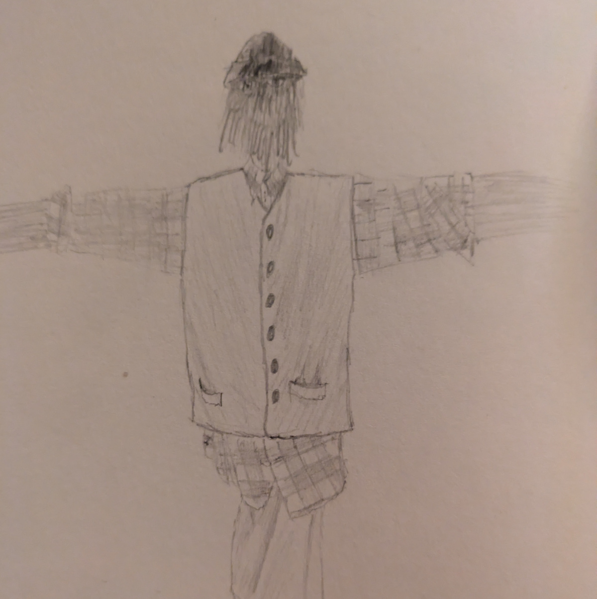

I’ve Been Reading: Straw World and Other Echoes From The Void, by Erik McHatton
Have you ever looked around at the world and thought, this all feels so fake? Have you ever felt as though the plotline of your life is a sick game being played by a compassionless cretin? Have you ever learned something that’s shaken the foundations of your view on reality, an idea that you wish you could forget?
Oh boy, do I have the book for you.

I don't know if this scares crows but it unnerves me
Straw World and Other Echoes From The Void is a short story collection by Erik McHatton. It’s firmly planted in the Ligottian branch of the weird horror family tree, a compelling blend of bleak ideas and deft craftsmanship that is sure to appeal to a certain kind of person. My kind of person, specifically.
The story opens up with a metatextual piece called Straw World, a second-person narrative in the form of a guide showing you around the titular horror attraction. Your guide takes you to four houses, which serve as the sections of the book. First is the Blue House, then the Red, the Yellow, and finally the Black. The attraction consists of scenes with straw figures, put together by an unseen entity called simply The Artist. Throughout, you’re encouraged to give yourself over to the narrative, to imagine the faces of people you know in the scenes depicted within. This can be a little harrowing if you’re the imaginative sort (like I am). The rewards are significant, however. There are nods to weird fiction classics, potent imagery, and an immaculately wrought sense of foreboding that is guaranteed to tickle connoisseurs of the macabre while the mind-bending philosophical tangents threaten to make a Lovecraft protagonist out of an unprepared reader.
I won’t go every story in detail, but I do want to talk about the collection as a whole. As a singular artefact, as a monument to gods best forgotten and dark fates that can’t be avoided. There’s a wide range of stories here, ranging from dark takes on Sword and Sorcery to Barker-esque butchery given only the worst aspects of sentience. McHatton glides effortlessly from the surreal to the absurd, conjures dread as easily as you or I breath, and ties everything together in a pretty little bow taken from the funeral shroud of an existential philosopher. It’s a coherent work, one that asks a lot of dangerous questions and doesn’t pretend to hint at answers. Most novels don’t manage this sort of unified push in one messaging direction, and to have fifteen stories do it without the work as a whole feeling one-note or repetitive is really very impressive.
A note on style and imagery. McHatton wears his old-school weird fic influence on his sleeve, with prose that hints at the baroque stylings of Lovecraft without getting lost in the sauce and concepts that synthesise the approaches to horror of Ligotti and Barker, with perhaps a little twitch in the direction of Kafka now and then. Though it’s perhaps unfair to speak of these stories in terms of their influences alone. Erik adds modern sensibilities and a working class perspective to the traditional cosmic horror/weird fiction formula and explores highly personal horror alongside the nihilistic dread and terror one would expect. There’s a decent range of variation in setting and theme, with some stories taking part in just-detailed-enough otherworlds while others are stuck in claustrophobic domestic situations or work environments that feel almost too real for comfort. I found the more fantastical stories to be a welcome change of pace from the more relatable horrors, in fact. It’s one thing to imagine a monster in another world, quite another to look across at the person at the next desk and wonder why nobody else sees the threat you see.
I think I’ve gone about as far as I can go without spoilers, so I’ll just leave you with my favourite stories of the collection. In no particular order, they are Little Dirt Boy, The Success of Dover’s Glen: A Study in Four People and Something’s Off About Wizzle.
That’s all from me.
Toodles,
–Antony F.